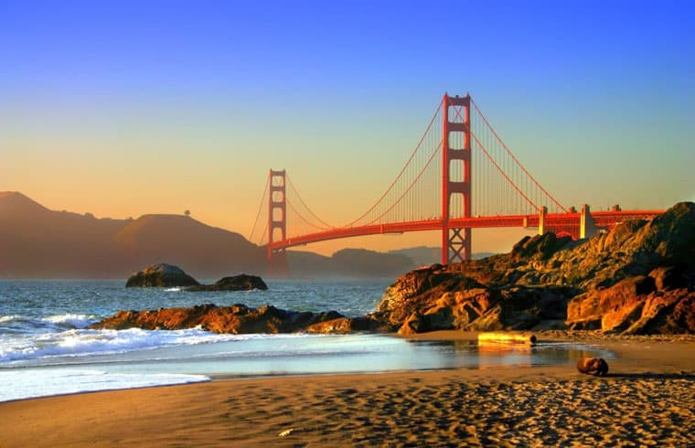
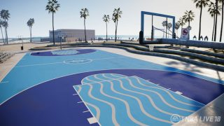
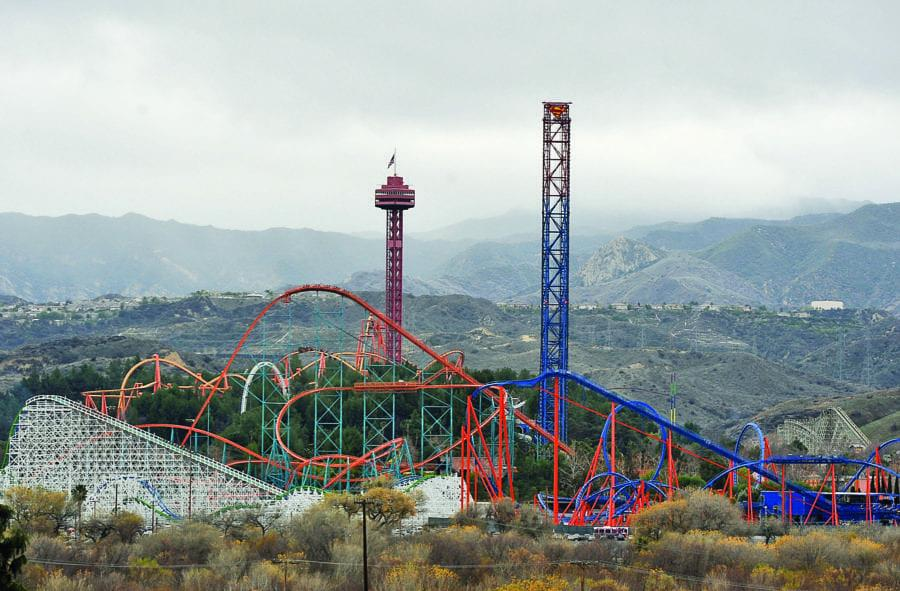

California 2019
La vacanza
19-29 luglio 2019
Questa fantastica esperienza si e' compiuta nel mese di luglio 2019, precisamente nei giorni dal 19 al 29. Abbiamo preso due voli: uno da Bologna diretto a Francoforte, principale hub della Lufthansa, compagnia con la quale abbiamo viaggiato, e quello più lungo, durato ben 11 ore, da Francoforte a San Francisco, la vibrante metropoli multietnica alle porte della Silicon Valley.
Da qui abbiamo visitato i seguenti posti:
- San Francisco
- Silicon Valley (con Apple Campus)
- Monterey
- Santa Barbara
- Santa Monica
- Hollywood
- Beverly Hills
- San Diego - Coronado
Il programma è stato:
- 18 luglio (UTC +1): partenza da Reggio Emilia ore 2:30, arrivo a Bologna alle ore 4:00, partenza volo ore 6:30. Arriviamo a Francoforte alle 8:00, da li' abbiamo preso alle 12:00 il volo per San Francisco. Arrivo alle ore 23:30 italiane! (Ore 15:30 locali)
- 19-21 luglio: visitiamo downtown San Francisco, Chinatown, Embarcadero e tutti i quartieri caratteristici
- 22 luglio: mattina: visita a Sausalito; Pomeriggio: nel viaggio verso Monterey, visitiamo le zone della Silicon Valley, con immancabile tappa all'Apple Visitor Center, vicino all'Apple Campus. Attraversiamo la catena montuosa e arriviamo a Santa Cruz, vivace centro portuale. Arriviamo a Monterey
- 23 luglio: visitiamo la cittadina di Monterey e scopriamo la sua tradizione marina
- 24 luglio: nel viaggio verso Santa Barbara, percorriamo le 135 miglia che uniscono Monterey a San Luis Obospo, dopo il quale saremo costretti a prendere l'autostrada, della famosa strada California 1 che costeggia il Pacifico, e ammiriamo le imponenti scogliere! Arriviamo a Santa Barbara
- 25 luglio: visitiamo Santa Barbara e i quartieri caratteristici
- 26-27 luglio: arriviamo nell'area metropolitana di Los Angeles, visitiamo Santa Monica e il molo. Il giorno successivo visitiamo la Hollywood Walk of Fame, Beverly Hills e il Getty Center
- 28 luglio: per concludere in bellezza, visitiamo la città più a sud di tutta la California, a sole 8 miglia dal confine Messicano: San Diego!
- 29 luglio: partenza da Los Angeles alle 13:00, per arrivare a Monaco di Baviera, dove un piccolo volo ci riporterà a Bologna. Arrivo a Reggio Emilia alle 17:00 del 30 luglio!

Clicca qui per maggiori informazioni sulla California!
Hobby
In California ci sono tante cose da fare!
La California è uno degli stati più importanti degli Stati Uniti, e come tale non mancano le strutture ricreative tipiche di quell'area, nonchè vari hobby che abbiamo fatto nella nostra vacanza. In particolare i campi da pallacanestro di Venice Beach, a Los Angeles sono molto famosi, essendo apparsi in innumerevoli film e cortometraggi, ma anche a San Francisco c'è un campo molto famoso, situato nella cima di una collina che domina tutta la città.
Nella nostra vacanza, inoltre, siamo andati anche ad uno dei parchi divertimenti più famosi di tutta la California, ovvero Six Flags Magic Mountain, il tempio delle montagne russe! Ce ne sono ben 22! Famoso anche il Santa Cruz Boardwalk, dove sono presenti vari chioschi e 3 montagne russe molto gettonate. Un altro parco famoso nei dintorni di Los Angeles è Knott's Berry Farm, non molto distante dalla zona in cui avevamo l'hotel.
Insomma, in California non c'è mai troppo poco da fare!


Fatto da Tommaso Cari Gallingani, classe 4G, 17/03/2021